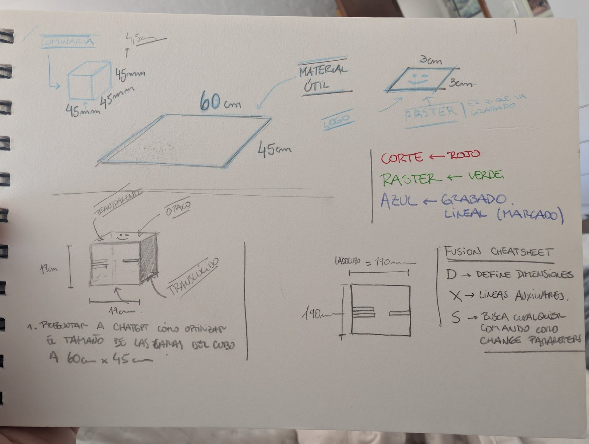
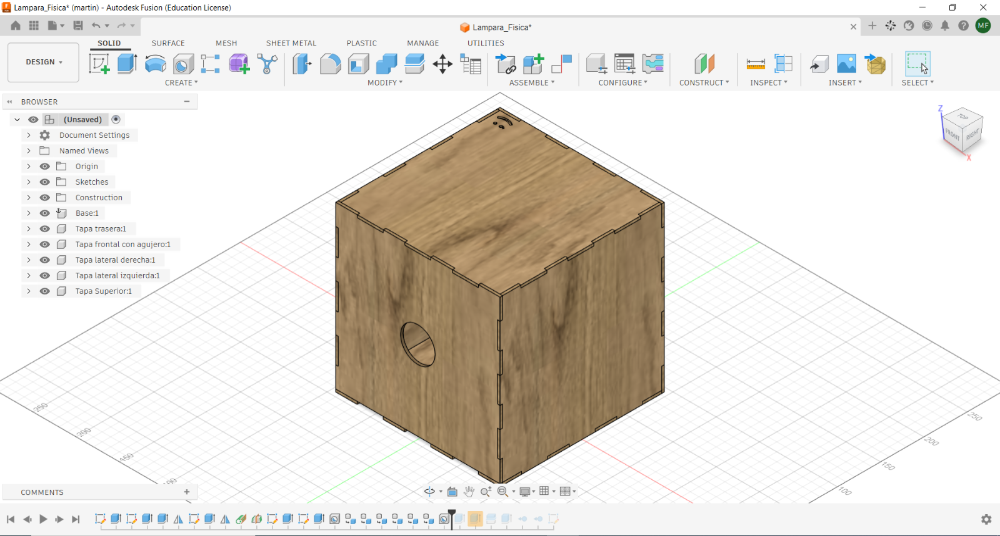
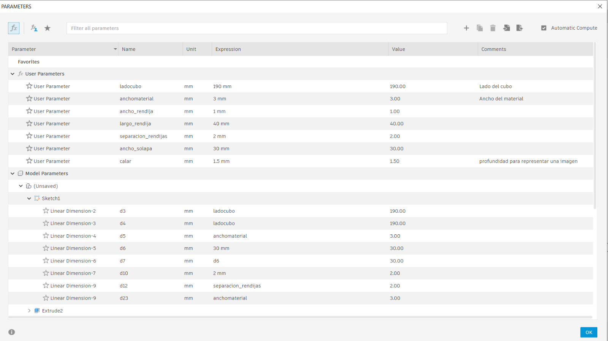
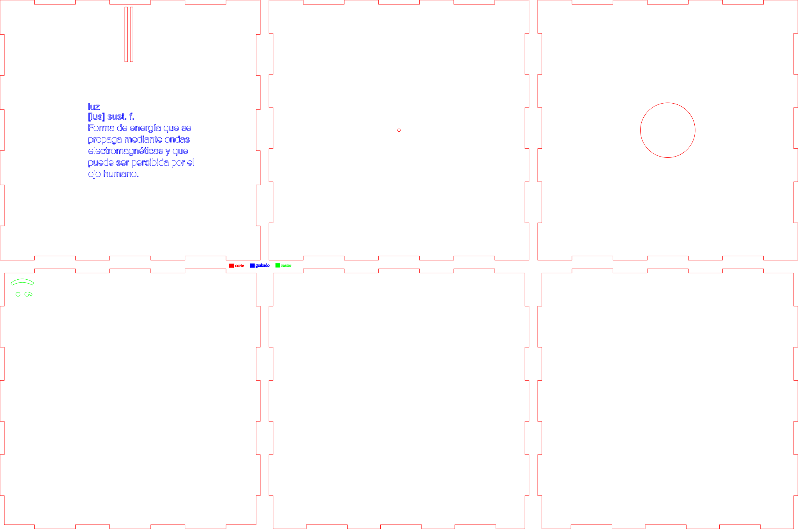
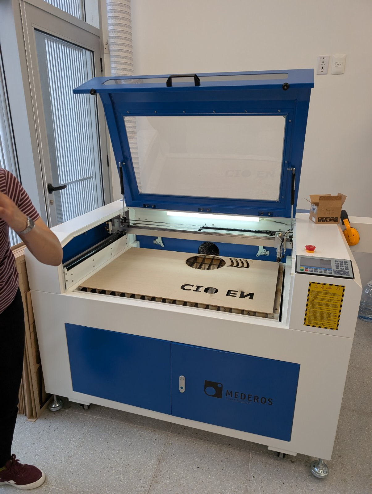
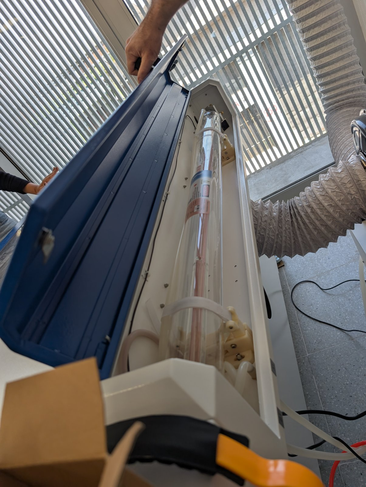
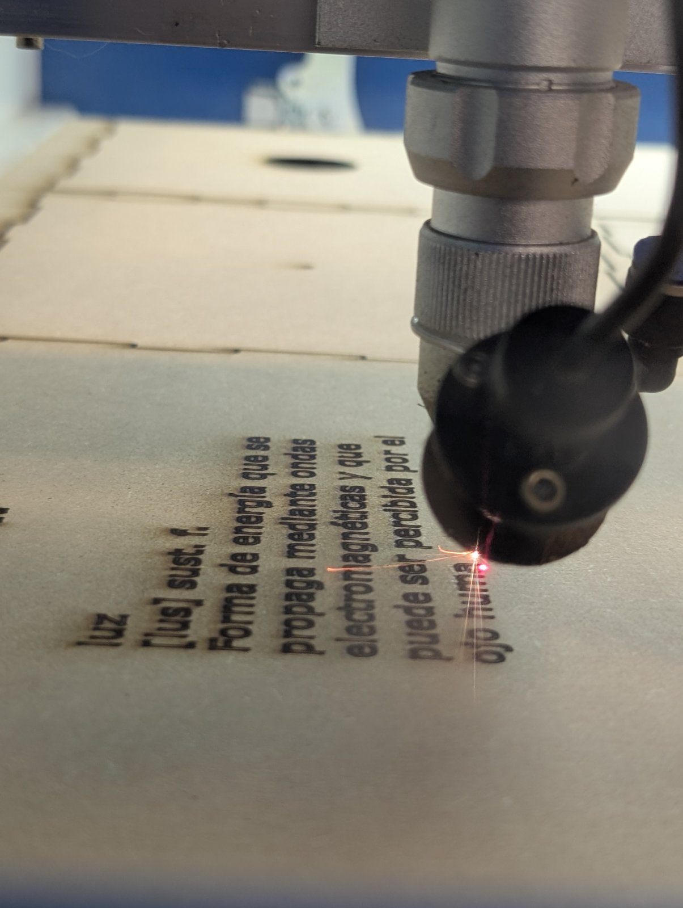
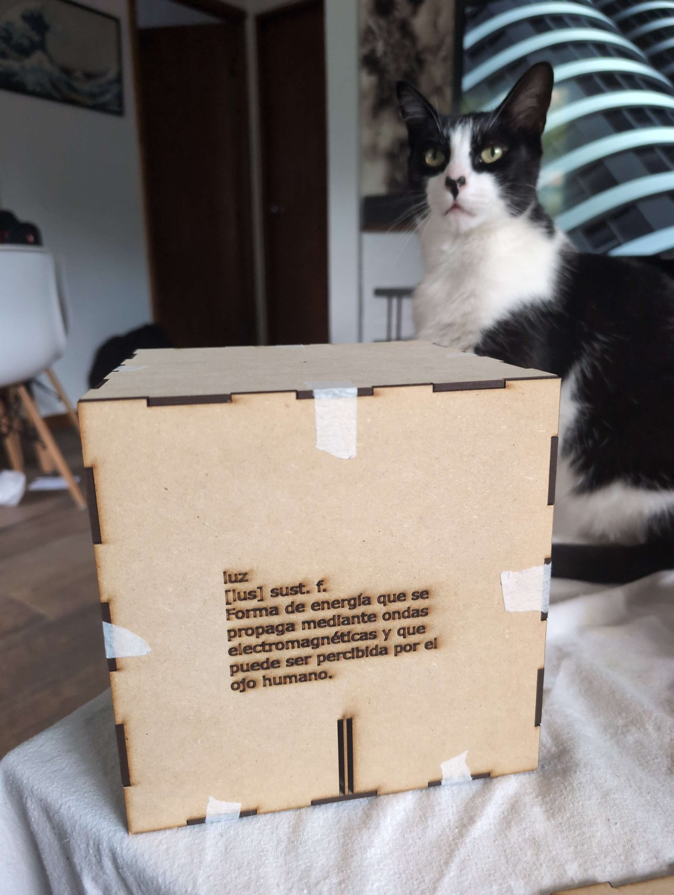

title: MT03 · FP01 · Lámpara Física: una cámara oscura para explorar la luz¶
MT03 · FP01 · Lámpara Física: diseñar, cortar y revelar la luz¶
- Máquina / técnica: cortadora láser CO₂; corte vectorial, grabado vectorial y rasterizado.
- Materiales: MDF de 3 mm de espesor, definido como parámetro en Fusion 360.
- Software: Fusion 360, Inkscape y RDWorks V8.
- Tiempo: pendiente de cuantificar; se extendió por la corrección en Fusion 360 y el segundo corte.
- Costo aproximado: pendiente de calcular.
- Archivos: ver abajo.
Objetivo¶
Quise aprovechar el módulo de corte láser para desarrollar un objeto que no fuera solamente decorativo, sino que también tuviera sentido desde la enseñanza de la física. Así surgió Lámpara Física: una estructura cúbica, con caras encastrables y desmontables, pensada para funcionar como lámpara y, a la vez, como cámara oscura. Mi intención fue reunir en un mismo objeto el diseño, la fabricación digital y una experiencia vinculada con el comportamiento de la luz.
La idea: una lámpara que también permita observar¶
La primera decisión fue trabajar con una cámara de caras independientes, en lugar de una estructura fija. Quería que pudiera armarse y desarmarse, que cada cara tuviera una función y que el conjunto pudiera seguir evolucionando con nuevas piezas o propuestas experimentales.
El concepto de cámara oscura orientó la organización del diseño: una abertura pequeña permite controlar la entrada de luz, mientras que el interior de la cámara ofrece un espacio para explorar la formación de imágenes. Para que esa experiencia funcione, será importante comprobar durante las pruebas el tamaño del orificio, el control de la luz ambiente y la superficie sobre la que se observa la proyección.
También me interesó que la pieza tuviera una lectura simbólica. Diseñé una tapa superior desmontable con un orificio, de manera que, al retirarla, se pudiera revelar aquello que permanece debajo, en relación con la definición de luz grabada en el conjunto. Ese gesto de destapar y revelar es una alegoría deliberada: la luz, desde el punto de vista físico, no solo ilumina un objeto, sino que hace posible observar y comprender lo que antes no veíamos.

Referencias y decisiones de diseño¶
Tomé como punto de partida el funcionamiento de la cámara oscura y las posibilidades que ofrece una estructura modular para desarrollar experiencias educativas. También me apoyé en el trabajo con archivos vectoriales y en la preparación de operaciones diferenciadas para una cortadora láser CO₂.
Durante el diseño decidí incorporar dos elementos gráficos propios. Por un lado, el logotipo de FisicaSimple.com, para vincular el objeto con mi trabajo de divulgación y enseñanza de la física. Por otro, una definición de la luz con formato de entrada de diccionario, para que el grabado también formara parte de la experiencia conceptual.
Proceso¶
1. Modelado en Fusion 360¶
Modelo 3D interactivo de la Lámpara Física:
Descargar modelo editable de Fusion 360 (.f3d) · Descargar modelo tridimensional (.stl)
Comencé por el diseño tridimensional de la estructura en Fusion 360. Mi intención fue crear una cámara oscura a partir del concepto de una lámpara modular: una estructura cúbica con lados encastrables que pudieran montarse y desmontarse sin perder la relación entre las piezas. La tapa superior con un orificio forma parte de esa propuesta y, al retirarla, permite revelar lo que queda por debajo, junto a la definición de luz grabada. Me interesaba que la forma y el modo de interactuar con el objeto también expresaran una idea sobre la luz desde la física.
Para fabricar la estructura elegí MDF de 3 mm de espesor. En Fusion 360 trabajé el diseño de forma paramétrica, tomando ese espesor como referencia para definir las dimensiones y los encastres. Esto fue especialmente importante para que las caras coincidieran entre sí y para poder modificar el diseño con mayor facilidad si en una nueva versión cambio el material o necesito ajustar las uniones.


Diseñar las piezas por separado me obligó a revisar las medidas del cubo, la posición de las aberturas y la correspondencia de cada encastre. No buscaba producir una cámara cerrada y definitiva, sino una estructura que pudiera intervenirse y reutilizarse en otras experiencias educativas. Por eso conservé el archivo editable y también exporté el modelo tridimensional para poder observar el conjunto armado.
2. Preparación vectorial en Inkscape¶
Una vez resuelta la geometría, trabajé en Inkscape con las piezas y los elementos gráficos. Preparé los contornos de corte y los elementos que debían grabarse o rasterizarse, cuidando la correspondencia entre las caras y la posición de los encastres.
En esta etapa incorporé el logo de Física Simple y la definición de luz. El texto no fue pensado solamente como una identificación del objeto: es parte de la propuesta de la lámpara y de la relación entre la experiencia óptica y el significado físico de la luz.
Para pasar del dibujo a la máquina, organicé el archivo mediante capas diferenciadas por color. Esto me permitió asignar a cada elemento una operación y unos parámetros específicos en RDWorks.

3. Configuración de la cortadora en RDWorks V8¶
Importé la preparación vectorial en RDWorks V8 y configuré por separado las operaciones. Utilicé tres capas: roja para el corte principal de los contornos, negra para el grabado vectorial y verde para el rasterizado. Esta separación fue fundamental para evitar aplicar a todos los trazos la misma velocidad y potencia.


Parámetros que usé¶
La tabla recoge únicamente los parámetros que varían entre las operaciones, tal como quedaron configurados en las capturas de RDWorks:
| Capa / operación | Modo en RDWorks | Velocidad | Potencia mínima | Potencia máxima |
|---|---|---|---|---|
| Rojo · Corte de contornos | Cut |
15 mm/s | 30 % | 30 % |
| Negro · Grabado vectorial | Cut |
70 mm/s | 15 % | 15 % |
| Verde · Rasterizado | Scan |
100 mm/s | 15 % | 15 % |
En el rasterizado, el intervalo de barrido configurado fue de 0,1 mm. Aunque la capa negra cumple una función de grabado vectorial, en el software está configurada técnicamente en modo Cut; por eso mantuve esa denominación en la tabla.
Estos valores documentan la configuración utilizada en esta práctica, no una receta universal: su resultado depende del material, el espesor, el estado de la máquina y el enfoque del haz, entre otros factores.
Archivo de instalación de RDWorks V8 utilizado en el módulo
4. Corte de las piezas¶
Con el archivo organizado y las capas configuradas, pasé a la fabricación sobre MDF de 3 mm. Esta etapa terminó siendo especialmente interesante porque tuve que realizar dos cortes de la cámara. El primero sirvió para comprobar algo que en pantalla no había advertido: aunque el modelo estaba planteado como un conjunto de caras encastrables, una de las piezas presentaba un problema de diseño.
Primera fabricación: el error que apareció al armar¶
Durante el primer corte fui verificando las piezas obtenidas y, al intentar ensamblarlas, apareció el problema: la parte inferior no encastraba correctamente con las demás caras. Al trasladar el diseño al objeto físico, quedó claro que la cámara no podía montarse de la forma prevista. El error provenía del trabajo de diseño en Fusion 360, donde había intervenido varias veces sobre una misma pieza y se había generado una inconsistencia en los encastres.
Este fue un momento importante del proceso porque el problema no se resolvía solamente modificando los parámetros de la cortadora. Había que volver al modelo original, identificar qué parte de la geometría no coincidía y corregirla.
Segunda fabricación: corrección y validación¶
En la misma jornada presencial regresé a Fusion 360, seguí el origen del error y realicé el ajuste correspondiente. Luego preparé nuevamente el archivo para efectuar un segundo corte y comprobar el armado. Este ciclo de revisión, corrección y nueva fabricación implicó dedicarle más tiempo del previsto, pero permitió completar el prototipo.
El resultado fue una cámara físicamente fabricada, completamente armable y con sus caras encastrando correctamente. Me pareció especialmente valioso haber podido detectar el error en una pieza real, rastrearlo en el archivo paramétrico y solucionarlo durante la misma jornada. La segunda iteración dejó de ser simplemente una repetición del corte: fue una comprobación de que la modificación del diseño efectivamente resolvía el problema.
Registro del corte en proceso:
Ver video del corte en Google Drive
5. Grabado y rasterizado¶
Además del corte, quise aprovechar el láser para integrar información y elementos gráficos en la pieza. La definición de luz, presentada como una entrada de diccionario, aporta una segunda lectura al objeto: más allá de su apariencia de lámpara, remite directamente al fenómeno físico que se busca explorar.
El logotipo de Física Simple completa esa identidad y conecta el trabajo del módulo con mis proyectos de recursos educativos. En la preparación de estas operaciones resultó importante distinguir un trazo vectorial de una superficie que se procesa mediante barrido, porque cada una requiere otra configuración en RDWorks.

Registro del rasterizado en proceso:
Ver video del rasterizado en Google Drive
Resultados¶
Avances Logré desarrollar el modelo paramétrico en Fusion 360, preparar las piezas en Inkscape y configurar las operaciones en RDWorks. Tras el primer corte, identifiqué el problema de encastre de la pieza inferior, lo corregí en Fusion 360 y realicé un segundo corte. El prototipo físico quedó armado y funcional como estructura encastrable dentro de la misma jornada presencial. Los registros fotográficos y los videos documentan distintas etapas de fabricación.
Error e iteración El primer intento no permitió montar correctamente la cámara: la pieza inferior no coincidía con las otras caras. El error se relacionaba con las modificaciones realizadas sobre esa pieza durante el modelado. Tuve que regresar a Fusion 360, corregir el diseño y repetir el corte, lo que extendió el tiempo de trabajo. La corrección fue efectiva y quedó validada mediante el armado físico.
Aspectos para seguir evaluando: Aunque se resolvió el ensamble de la cámara, quiero registrar con mayor precisión las tolerancias de los encastres, evaluar la legibilidad y durabilidad del grabado y, sobre todo, comprobar experimentalmente el funcionamiento óptico de la cámara oscura. Que el prototipo esté correctamente armado no demuestra por sí solo que la proyección de imágenes ya esté optimizada.
Reflexión¶
Lo que más me interesó de este módulo fue pasar de la idea de una lámpara a un objeto que puede generar preguntas sobre la luz. El diseño de las caras encastrables me obligó a pensar no solo en la forma, sino también en el armado, la fabricación y las posibilidades de intervenir la estructura después.
La combinación de Fusion 360, Inkscape y RDWorks me permitió ver con mayor claridad que diseñar para fabricar implica tomar decisiones en diferentes etapas, desde parametrizar el espesor del MDF hasta configurar la máquina. Lo que más me dejó la experiencia fue tener que volver del objeto físico al diseño digital: cuando las caras no encastraron en el primer intento, pude revisar la pieza problemática, corregirla en Fusion 360 y hacer un segundo corte en la misma jornada. Se necesitó más tiempo, pero terminé con una cámara que sí podía armarse. Comprobé que una pieza puede verse correcta en el modelo y revelar errores recién al intentar montarla, y que por eso es tan importante fabricar, probar e iterar.
También valoro la dimensión conceptual del proyecto. La cámara oscura permite abordar la propagación de la luz a través de una experiencia tangible. Al mismo tiempo, el orificio, la tapa desmontable y la definición grabada proponen un juego entre dejar entrar la luz, observar y revelar. Me gustó que esa idea pudiera expresarse tanto en la función del objeto como en su diseño.
Quiero seguir mejorando esta pieza y llevarla hacia una versión más rigurosa desde el punto de vista experimental: revisar el diámetro del orificio, la superficie de proyección y las condiciones de observación; medir y ajustar los encastres; y registrar los cambios necesarios para que otras personas puedan reproducirla.
Este trabajo también se vincula con FisicaBit y con mi objetivo de crear materiales de laboratorio accesibles y reproducibles. La fabricación digital tiene un valor especial cuando permite diseñar un recurso, probarlo, corregirlo y compartir sus archivos para que pueda producirse en otras instituciones educativas. Esa es la dirección en la que me interesa seguir avanzando durante la especialización.
Archivos¶
- Lámpara Física (.f3d) · modelo original editable en Fusion 360.
- Lámpara Física (.stl) · modelo tridimensional exportado.
- Plano de corte con operaciones por colores (.svg) · preparación vectorial de las caras.
- Logo de Física Simple (.svg) · elemento gráfico incorporado al diseño.
- Definición de luz (.svg) · composición para grabado.
- RDWorks V8 (.zip) · archivo del software utilizado.
- Video del corte · registro del proceso.
- Video del rasterizado · registro del proceso.


Diseño terminado¶
